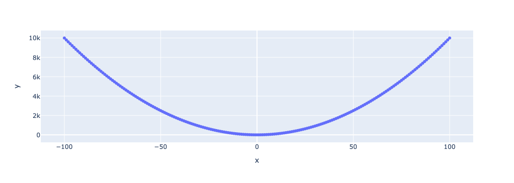
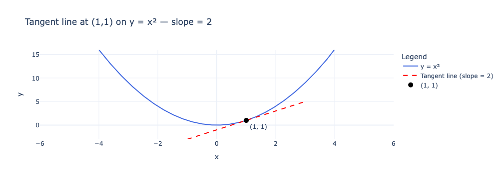
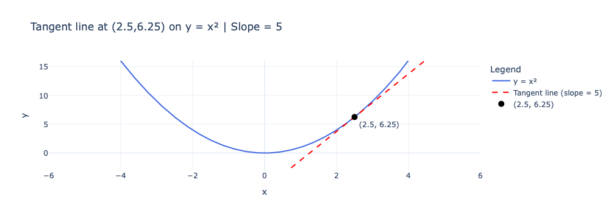

import torch
import pandas as pd
import plotly.express as px
x = torch.arange(-100, 100+1, 1)
y = 2 * x
px.scatter(x=x, y=y)
Goal: Given a function, how can we find it’s minimum value
Let x be a vaiable with can take any value from -inf to +Inf. We can think of x as the x axis. Now let y = x^2.
This means that for any value of x (say 2) we just double it to get y. (2 * 2 = 4).
y = 2x is rule we have defined. We can also call it a function (y is a function of x; as value of y depend solely on the value of x).
We know x looks like the x-axis, but how does y look. let’s plot it.
import torch
import pandas as pd
import plotly.express as px
x = torch.arange(-100, 100+1, 1)
y = 2 * x
px.scatter(x=x, y=y)
Its a line which is going upwards as x increases!
Now let’s think why that the case. Let’s investigate a few values of x and they corresponding y values.
y_func = pd.DataFrame({
"x" : x,
"y" : y,
})
y_func["x change"] = y_func["x"] - y_func["x"].shift(1)
y_func["y change"] = y_func["y"] - y_func["y"].shift(1)
y_func.loc[y_func["x"].isin(range(0,11))].tail(10)| x | y | x change | y change | |
|---|---|---|---|---|
| 101 | 1 | 2 | 1.0 | 2.0 |
| 102 | 2 | 4 | 1.0 | 2.0 |
| 103 | 3 | 6 | 1.0 | 2.0 |
| 104 | 4 | 8 | 1.0 | 2.0 |
| 105 | 5 | 10 | 1.0 | 2.0 |
| 106 | 6 | 12 | 1.0 | 2.0 |
| 107 | 7 | 14 | 1.0 | 2.0 |
| 108 | 8 | 16 | 1.0 | 2.0 |
| 109 | 9 | 18 | 1.0 | 2.0 |
| 110 | 10 | 20 | 1.0 | 2.0 |
In our table above if x1 = 5 & x2 = 6, y1 = 10 and y2 = 12. This implies that if we move one unit along x axis (6-5), we automatically move 2 unit along upwards along the y axis. For each point we can see that if the value of x increases by 1, the value of y increases by 2.
Let’s see why that happens. Consider 2 values of x. - x = x1, then y = 2 * x1 - x = x2, then y = 2 * x2 - Here x2 > x1
Then, - Increase in x = Distance moved along x-axis towards the right - Increase in x = x2 - x1 - Increase in y = Due to movement in x axis, how much did we move along the y-axis (upwards) - = y2 - y1 = 2 * x2 - 2 * x1 = 2 * (x2 - x1)
Notice that we moved along y-axis 2 times of how much we moved along the x axis! More importantly, we did not specify what is the difference between x2 and x1. This implies that for any increase along the x-axis towards the right we will always move 2 time upward along the y axis.
If x = 6.0 and x2 = 6.1; y1 = 6.0 * 2 = 12.0 and y2 = 6.1 * 2 = 12.2 - Increase in x (movement along x axis going from x1 to x2) - = 6.1 - 6 = 0.1 - Increase in y (movement along x axis going from x1 to x2) - = 12.2 - 12 = 0.2 = 2 * 0.1 = 2 * increase in x
This is why y = 2x is a line! And, the line “grows” by a factor of 2!
Why is it a line: > Because y moves up by the same factor for every movement to the right. Since this factor is always the same, the graph never bends and forms a straight line. In the example below we will see what happens when the slope is not constant
Growth factor of 2:
> As we take a step towards the right of x axis, we move 2 times as much upward along the y axis. Also, this is irrespective of how big a step we take towards right side of x-axis.
Also, if we keep increasing x the value of y keeps increasing. This is why we see y = 2x growing upwards as we move towards the right of x axis.
Hence, growth can be defined as \(\text{Growth or Slope} = \frac{\text{increase in } y}{\text{increase in } x}\) The above formula is intutive. For a line, how fast it grows depends on how quickly y increase when x is moved by a little bit to the right of x-axis. If y increase too much for a small change in x, the line will be steeper.
Hence, increase in y (rise)/ increase in x (run) gives us a constant factor for a line. Higher the value of factor (slope) steeper the line.
What would a negative slope imply? Its actually quite simple.
The negative sign indicates that the line goes downward as the value of x increase.
Let’s consider another function: z = -2x
x = torch.arange(-100, 100+1, 1)
z = x * -2
px.scatter(x=x, y=z)
z_func = pd.DataFrame({
"x" : x,
"y" : z,
})
z_func["x change"] = z_func["x"] - z_func["x"].shift(1)
z_func["y change"] = z_func["y"] - z_func["y"].shift(1)
z_func.loc[z_func["x"].isin(range(0,11))].tail(10)| x | y | x change | y change | |
|---|---|---|---|---|
| 101 | 1 | -2 | 1.0 | -2.0 |
| 102 | 2 | -4 | 1.0 | -2.0 |
| 103 | 3 | -6 | 1.0 | -2.0 |
| 104 | 4 | -8 | 1.0 | -2.0 |
| 105 | 5 | -10 | 1.0 | -2.0 |
| 106 | 6 | -12 | 1.0 | -2.0 |
| 107 | 7 | -14 | 1.0 | -2.0 |
| 108 | 8 | -16 | 1.0 | -2.0 |
| 109 | 9 | -18 | 1.0 | -2.0 |
| 110 | 10 | -20 | 1.0 | -2.0 |
Take away: 1. In the tables above, for each row, we have taken a one step (increased x by one; the next row) and calculated the slope. Slope is constant for straight lines, i.e., for all values of x its the same value. 2. The slope does not change if we increased \(x\) by a step size other that 1
Consider: 1. Function: \(y = 5x\) 2. \(x_1 = a\), then \(y_1 = 5 * x_1\). Let’s calculate slope at \(x_1 = a\) 3. We increment \(x_1\) by \(c\): - \(x_2 = a + c\) - Then, \(y_2 = 5 * x_2 = 5(a + c) = 5a + 5c\). In the tables in above sections, \(c = 1\) 4. Increase in \(x\) = \(x_2 - x_1 = a + c - a = c\) 5. Increase in \(y\) = \(y_2 - y_1 = 5a + 5c - 5a = 5c\) 6. \(\text{Slope at } x_1 = \frac{\Delta y}{\Delta x} = 5c/ c = 5\)
Note: - We get a constant slope value. Straight lines have a constant slope. - The slope does not depend on value of \(a\) (i.e.,value of \(x\)) & \(c\) (step size). This is why slope is a constant value for all \(x\). - The case above holds true for any value of \(a\) (value of \(x\)) & \(c\) (step size)
x = torch.arange(-100, 100+1, 1)
y = x ** 2
px.scatter(x=x, y=y)
It’s a curve! The curve \(y = x^2\) is symmetrical about the y-axis. This is because \((-x)^2 = (x)^2 = x^2\). Therefore, for \(x\) & \(-x\) we get the same value for \(y\).
Approach: Slope at point \(x\) = \(\frac{\Delta y}{\Delta x}\)
So we need 2 points again \((x_1, x_2)\). Let: - \(x_1 = 1\), then \(y_1 = 1^2 = 1\) - \(x_2 = 2\), then \(y_2 = 2^2 = 4\)
Let’s try to find the slope at \(x_1\) - \(\text{slope at } x_1 = \frac{\Delta y}{\Delta x} = (4-1)/ (2-1) = 3\)
Now, let’s try a different \(x_2\) - \(x_2 = 3\), then \(y_2 = 3^2 = 9\) - \(\text{slope at } x_1 = \frac{\Delta y}{\Delta x} = (9-1)/ (3-1) = 8/2 = 4\)
Oh, we get a different value! Why is that?
Like before, let’s analyze this for a general case. Consider:
So we see the slope at \(x = a\) does indeed depend on: 1. Value of \(x\) (\(a\)). This is intuitive by looking at the curve. 2. Value of the step \(c\). - A single point \(x = a\) shouldn’t have infinitely many different slopes depending on an arbitrary second point we choose. For the line, this issue didn’t arise because \(c\) cancelled out entirely. - 2a+c is really the slope of the chord between \((x_1 = a, y_1)\) and \((x_2 = a + c, y_2)\). This follows from the earlier section, slope of line joining any 2 points is \(\frac{\Delta y}{\Delta x}\).
We have: - Function: \(y = x^2\) - Slope at point \((x = a, y = a^2)\) is given by \(2a + c\) where \(c\) is the step size we take towards the right along x-axis to get the second point for slope calculation.
Let us consider: \(a = 1\) & \(c = 3\): - First point is \((x = a, y = a^2)\) = \((x = 1, y = 1)\). This is the point for which we are trying to calculate the slope. - Second point is \((x = a + c, y = (a + c)^2)\) = \((x = 1 + 3, y = (1 + 3)^2)\) = \((x = 4, y = 16)\) - Therefore, \(Slope = 2a + c = 2 * 1 + 3 = 5\)
This slope is the slope of the line joining the 2 points \((x = 1, y = 1)\) and \((x = 4, y = 16)\). However, this line does not seem to indicate the steepness of the curve at \((x = 1, y = 1)\) (point for which we are trying to figure out the slope). From the plot it’s steeper than the steepness of the curve at \((x = 1, y = 1)\)
So, we have picked 2 points on the curve, drawn a straight line through them and calculated slope (same as what we did with the straight line case). Hence, 2a+c is really the slope of the chord between the 2 points. This is why we get different slopes every time we pick a different \(c\) (ie., picking a different second point).
For a straight line case in previous section, the slope is the same for all points on the line. Therefore, for any 2 points we picked on the line, it was the same line through them. This is no longer the case.
So how can we now calculate the slope (the steepness) of the curve at \((x = 1, y = 1)\)?
What if we try to pick a point close to \((x = 1, y = 1)\) and draw a straight line through it? If the point is close, the straight line through them can indicate the steepness of the curve near \((x = 1, y = 1)\). We can do that by reducing \(c\).
import plotly.graph_objects as go
import numpy as np
a = 1
extend_len = 2
c_values = [3, 2, 1, 0.5, 0.25, 0.1, 0.01, 0.001, 0.0001]
x_vals = np.linspace(a - 5, a + 5, 400)
y_vals = x_vals**2
p1 = np.array([a, a**2])
def get_extended_line(c):
second_point = np.array([a + c, (a + c)**2])
direction = second_point - p1
length = np.linalg.norm(direction)
unit_dir = direction / length
ext_p1 = p1 - unit_dir * extend_len
ext_p2 = second_point + unit_dir * extend_len
return ext_p1, ext_p2, second_point
def get_label_text(c):
_, _, second_point = get_extended_line(c)
slope = 2 * a + c
return (f"c = {c} second point = ({second_point[0]:.4f}, {second_point[1]:.4f})"
f" Slope = {slope:.5f}")
# Fixed annotation anchored to the plot area (paper coords), top-center
def fixed_annotation(text):
return dict(
x=0.5, y=1.08, xref="paper", yref="paper",
text=text, showarrow=False,
font=dict(color="blue", size=12, weight="bold"),
bgcolor="white", bordercolor="white", borderwidth=1,
xanchor="center"
)
# --- Base traces ---
base_traces = [
go.Scatter(x=x_vals, y=y_vals, mode="lines", name="y = x²",
line=dict(color="royalblue", width=2)),
go.Scatter(x=[a], y=[a**2], mode="markers+text", name="Point a",
marker=dict(color="black", size=10),
text=["(a, a²)"], textposition="top center"),
]
# Initial frame
ext_p1, ext_p2, second_point = get_extended_line(c_values[0])
secant_trace = go.Scatter(
x=[ext_p1[0], ext_p2[0]], y=[ext_p1[1], ext_p2[1]],
mode="lines", line=dict(color="red", width=2, dash="dot"),
name="Secant line"
)
point_trace = go.Scatter(
x=[second_point[0]], y=[second_point[1]],
mode="markers", marker=dict(color="red", size=9),
name="Second point"
)
fig = go.Figure(
data=base_traces + [secant_trace, point_trace],
layout=go.Layout(
title="How the slope changes as c approaches 0",
xaxis_title="x", yaxis_title="y",
template="plotly_white",
margin=dict(t=120), # extra room at top for the fixed label
xaxis=dict(range=[a - 5, a + 5]),
yaxis=dict(range=[min(y_vals) - extend_len, max(y_vals)]),
annotations=[fixed_annotation(get_label_text(c_values[0]))],
updatemenus=[dict(
type="buttons",
showactive=False,
y=1.15, x=1.05,
buttons=[
dict(label="Play", method="animate",
args=[None, dict(frame=dict(duration=1200, redraw=True),
fromcurrent=True, transition=dict(duration=300))]),
dict(label="Pause", method="animate",
args=[[None], dict(frame=dict(duration=0, redraw=False),
mode="immediate")])
]
)]
)
)
# --- Build frames ---
frames = []
for c in c_values:
ext_p1, ext_p2, second_point = get_extended_line(c)
frames.append(go.Frame(
data=[
go.Scatter(x=[ext_p1[0], ext_p2[0]], y=[ext_p1[1], ext_p2[1]],
mode="lines", line=dict(color="red", width=2, dash="dot")),
go.Scatter(x=[second_point[0]], y=[second_point[1]],
mode="markers", marker=dict(color="red", size=9))
],
traces=[2, 3],
name=str(c),
layout=go.Layout(
annotations=[fixed_annotation(get_label_text(c))]
)
))
fig.frames = frames
# --- Slider ---
fig.update_layout(
sliders=[dict(
steps=[dict(method="animate",
args=[[str(c)], dict(mode="immediate",
frame=dict(duration=300, redraw=True),
transition=dict(duration=300))],
label=f"c={c}") for c in c_values],
currentvalue=dict(prefix="c = ")
)]
)
fig.show()
We can see that when \(c\) is very small, the second point is very close to the \((x = 1, y = 1)\) and the line through them does indeed show the steepness of the curve at \((x = 1, y = 1)\). So we can still use the slope of lines to estimate the slope of curve, only if we take a very small step.
Also, when c is approximately 0,
- \(Slope = 2a + c \approx 2a\) - The line joining the 2 very close points on the curve resembles the tangent of the curve at \((x = 1, y = 1)\) - As c tends to 0 (extremely close to zero), the second point slides into the first point, and the chord becomes the tangent line — the line whose slope matches the curve’s steepness at that point.
So when \(c\) is small, slope only depends on selected value of \(x\).
A limit asks: what value does an expression approach as one of its parts gets closer and closer to some target, without necessarily ever reaching it?
In our case, the expression is the slope \(2a+c\), and the part changing is \(c\), which we are pushing closer and closer to \(0\) (but never quite letting it equal \(0\), since \(c=0\) would mean the second point isn’t really a second point at all).
As \(c\) shrinks \(1, 0.1, 0.01, 0.001, 0.0001, ...\) the value of \(2a+c\) doesn’t jump around; it settles down and gets arbitrarily close to a single fixed number: \(2a\)
We have defined slope as:
\(Slope = \frac{\Delta y}{\Delta x}\)
Note: - \(\Delta x\) is simply the increase in the value of \(x\), i.e., from \(x = a\) to \(x = a + c\). \(\Delta x = a + c - a = c\) - \(\Delta y\) is the increase in the function value (i.e., the value of \(y\)) as we increase the value of x by a little. This can also be written as \(f(a + c) - f(a)\)
So, - \(Slope = \frac{\Delta y}{\Delta x} = \frac{f(a + c) - f(a)}{c}\) - And we want \(c\) to be very close to zero. In the language of limits, c tends to zero or \(c \to 0\)
This is the exact definition of derivatives!
Definition: For a function \(y = f(x)\), the derivative at \(x = a\) is:
Derivative of a function \(y\) defined as \(y = f(x)\) then the derivative of the function at \(x = a\):
\(\displaystyle f'(a) = {\textstyle {\frac {df}{dx}}(a)} = \lim _{h\to 0}{\frac {f(a+h)-f(a)}{h}}\)
So, if we consider a point \((P1)\) on the curve and another point \((P2)\) very close to it, the slope of the line passing through them closely approximates the derivative (or gradient or steepness) of the curve at point \(P1\) and this approximation gets exact as \(P2\) approaches \(P1\). In that limit, the line becomes the tangent line at point \(P1\).
Now that we have what we want, we can calculate the steepness of a curve at any point on the curve.
import plotly.graph_objects as go
import numpy as np
# Point of tangency
x0, y0 = 1, 1
slope = 2
# Curve
x_vals = np.linspace(-5, 5, 400)
y_vals = x_vals**2
# Tangent line: y - y0 = slope * (x - x0) => y = y0 + slope*(x - x0)
x_line = np.linspace(x0 - 2, x0 + 2, 100)
y_line = y0 + slope * (x_line - x0)
fig = go.Figure()
# Plot y = x^2
fig.add_trace(go.Scatter(
x=x_vals, y=y_vals,
mode="lines",
name="y = x²",
line=dict(color="royalblue", width=2)
))
# Plot tangent line
fig.add_trace(go.Scatter(
x=x_line, y=y_line,
mode="lines",
name=f"Tangent line (slope = {slope})",
line=dict(color="red", width=2, dash="dash")
))
# Mark the point of tangency
fig.add_trace(go.Scatter(
x=[x0], y=[y0],
mode="markers+text",
name=f"({x0}, {y0})",
marker=dict(color="black", size=10),
text=[f"({x0}, {y0})"],
textposition="bottom right"
))
fig.update_layout(
title="Tangent line at (1,1) on y = x² — slope = 2",
xaxis_title="x",
yaxis_title="y",
template="plotly_white",
xaxis=dict(range=[-6, 6]),
yaxis=dict(range=[-3, 16]),
legend=dict(title="Legend")
)
fig.show()
Let’s check for another point on the curve. Let \(x = 2.5\), the point on curve is \((x = 2.5, y = 2.5^2) = (2.5, 6.25)\). The gradient at this point is \(2a = 2 * 2.5 = 5\).
Hence, we expect the curve to be steeper here since the gradient here (5) is more than the gradient at \((1,1)\) (which is 2). Let’s plot the point \((2.5, 6.25)\) on the curve and have a line with slope 5 pass through it. Indeed it’s the tangent to the curve and the steepness of the curve here is more than at point \((1,1)\).
import plotly.graph_objects as go
import numpy as np
# Point of tangency
x0, y0 = 2.5, 6.25
slope = 5
# Curve
x_vals = np.linspace(-5, 5, 400)
y_vals = x_vals**2
# Tangent line: y - y0 = slope * (x - x0) => y = y0 + slope*(x - x0)
x_line = np.linspace(x0 - 2, x0 + 2, 100)
y_line = y0 + slope * (x_line - x0)
fig = go.Figure()
# Plot y = x^2
fig.add_trace(go.Scatter(
x=x_vals, y=y_vals,
mode="lines",
name="y = x²",
line=dict(color="royalblue", width=2)
))
# Plot tangent line
fig.add_trace(go.Scatter(
x=x_line, y=y_line,
mode="lines",
name=f"Tangent line (slope = {slope})",
line=dict(color="red", width=2, dash="dash")
))
# Mark the point of tangency
fig.add_trace(go.Scatter(
x=[x0], y=[y0],
mode="markers+text",
name=f"({x0}, {y0})",
marker=dict(color="black", size=10),
text=[f"({x0}, {y0})"],
textposition="bottom right"
))
fig.update_layout(
title="Tangent line at (2.5,6.25) on y = x² | Slope = 5",
xaxis_title="x",
yaxis_title="y",
template="plotly_white",
xaxis=dict(range=[-6, 6]),
yaxis=dict(range=[-3, 16]),
legend=dict(title="Legend")
)
fig.show()
It is important to note that at this point, a line with any other slope will not be the tangent. Lets plot the point \((2.5, 6.25)\) on the curve and have a line with slope 7 instead of 5 pass through it.
import plotly.graph_objects as go
import numpy as np
# Point of tangency
x0, y0 = 2.5, 6.25
slope = 7
# Curve
x_vals = np.linspace(-5, 5, 400)
y_vals = x_vals**2
# Tangent line: y - y0 = slope * (x - x0) => y = y0 + slope*(x - x0)
x_line = np.linspace(x0 - 2, x0 + 2, 100)
y_line = y0 + slope * (x_line - x0)
fig = go.Figure()
# Plot y = x^2
fig.add_trace(go.Scatter(
x=x_vals, y=y_vals,
mode="lines",
name="y = x²",
line=dict(color="royalblue", width=2)
))
# Plot tangent line
fig.add_trace(go.Scatter(
x=x_line, y=y_line,
mode="lines",
name=f"Tangent line (slope = {slope})",
line=dict(color="red", width=2, dash="dash")
))
# Mark the point of tangency
fig.add_trace(go.Scatter(
x=[x0], y=[y0],
mode="markers+text",
name=f"({x0}, {y0})",
marker=dict(color="black", size=10),
text=[f"({x0}, {y0})"],
textposition="bottom right"
))
fig.update_layout(
title="Tangent line at (2.5,6.25) on y = x² | Slope = 7",
xaxis_title="x",
yaxis_title="y",
template="plotly_white",
xaxis=dict(range=[-6, 6]),
yaxis=dict(range=[-3, 16]),
legend=dict(title="Legend")
)
fig.show()As we can see it’s not the tangent.